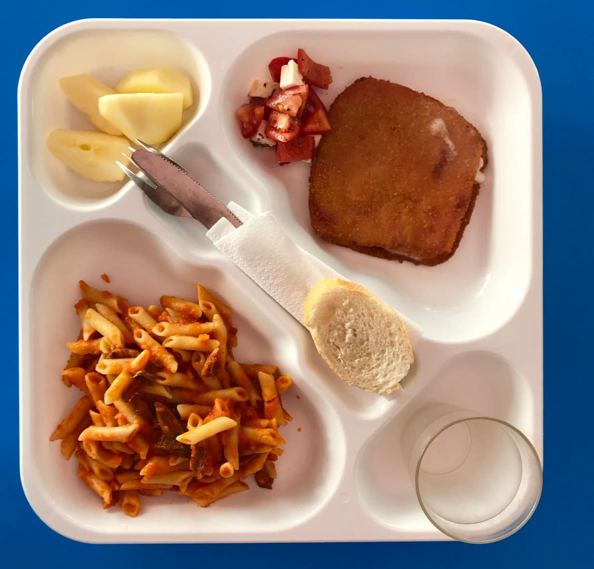

Nutrición
DISEÑANDO MENÚS (VISUALMENTE) ATRACTIVOS
Lograr que los niños coman todo lo que se sirve en el plato, en el colegio y en casa, a veces puede suponer un problema de cierta consideración. El “no me gusta” obedece en un importante porcentaje al aspecto físico de la comida; lo que muchos especialistas denominan “comer por los ojos”. Y sobre este asunto queremos inaugurar el culinario blog de Terkor: Cómo hacer menús visualmente atractivos.
En Terkor llevamos 41 años de dedicación plena en la restauración para colectividades, más concretamente para colegios. Nuestra experiencia nos dicta que gran parte del éxito del menú reside en ofrecer alimentos apetecibles –desde el punto de vista del gusto –pero, también, que el sentido de la vista se recree. No en vano, los grandes chefs señalan que el menú ideal sería aquel que deleitara por igual los 5 sentidos; así, muchos de ellos equiparan comer como una “experiencia”. Y, como tal, en Terkor queremos llevarla a cabo con nuestros clientes.
Coloridos Decía un chef español hace un par de décadas que la ensalada perfecta es aquella que tenga más color. Así, mientras muchos se paraban en el verde, rojo y blanco (lechuga, tomate y cebolla), éste apostaba por introducir la mayor cantidad de colores posibles; lo cual además permitiría introducir una mayor cantidad de alimentos: amarillo (maíz), negro y verde (aceitunas), rojo y verde, (pimiento). Ligado al color, las texturas. Cada vez más nutricionistas sacan del cajón a los frutos secos y los ponen en valor. ¿Por qué no añadir nueces, almendras o pistachos (el oro verde que lo llaman ahora) a comidas tanto frías (ensaladas) como cocinados (pollo asado, diversos pescados, carnes magras, etc.). Según Oliver Córdoba, director gerente de Terkor, “en Terkor trabajamos día a día investigando cómo introducir determinados alimentos en los menús para que- sin perder nutrientes- podamos elaborar menús interesantes para los más pequeños”. Otras veces, esa “vistosidad” se consigue a partir de un poco – o mucho-ingenio. Así, podemos preparar a partir de una simple salchicha pequeños pulpos…

Sin embargo, diseñar un menú visualmente atractivo debe también –por supuesto- ser nutritivo y equilibrado. Para solucionar este problema (introducir en la dieta alimentos poco deseables, como verduras), en Terkor insertamos aquellos productos que prácticamente han sido casi desterrados (brócoli) en comidas que los niños comen con los ojos cerrados, como hamburguesas o pizzas. ¿Existe algo acaso más saludable que una buena pizza de calabacín, tomate fresco en rodajas, alcaparras, aceitunas y brócoli?
En plato o bandeja Aquí, una vez más, la duda para centenares de colegios. ¿Cómo deberían comer mis alumnos, en bandeja o en plato? Como es evidente, cada una de las dos opciones aporta una serie de ventajas –e inconvenientes- a la hora de emplatar la comida. Sin embargo, este post trata sobre cómo diseñar un menú que, desde el punto visual, resulte atractivo para el alumno. Según Córdoba, “el peso de una bandeja es muy inferior a la suma de los dos platos, y así el reparto de pesos permite a cada niño, con independencia de su edad, transportar fácilmente su menú”. Además, para los equipos de gestión, las bandejas aportan un gran plus: se apilan mucho mejor reduciendo el espacio respecto a los platos. No obstante, una buena presentación en el plato o bandeja logrará que los niños vean con mejores ojos la comida.

En Terkor recordamos la importancia de una buena salud bucodental; animamos a que los colegios recomienden a sus alumnos que se queden a comedor que se limpien los dientes después de cada comida. Además, a partir de cierta edad es conveniente realizar enjuagues bucales con flúor.
Si quieres recibir más información sobre nuestros menús, especiales para alérgicos y dietas específicas, no dudes en contactar con nosotros.